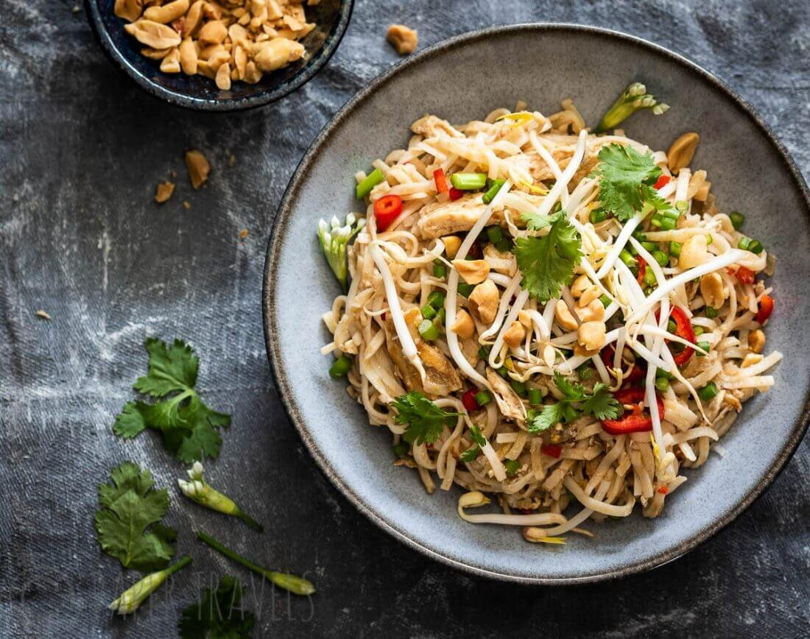

Pad Thai

Finished Pad Thai
Yes! You can make restaurant-worthy pad Thai at home.
It's not at all hard—it just takes a little strategic planning.
This one is adapted from Chef Peter of 1001 Thai in Easton, PA.
This classic dish of noodles, egg, veggies, and bean sprouts is
one you encounter in almost all Thai restaurants—it’s a standard bearer.
As 48-year-old Chef Pheraphat Phromsom (he goes by Peter) says,
“If the pad Thai is good, the restaurant is good.”
Ingredients
- 4 large eggs
- 1 pound shrimp, peeled, deveined, and defrosted
- 1 (14-ounce) package of flat, wide rice noodles
- 1/3 cup roasted unsalted peanuts, chopped roughly
Steps
- Soak the rice noodles.
- Make the sauce.
- Divide all of your ingredients into two batches.
- Cook the eggs
- Cook the shrimp.
- Soften the noodles.
- Add the noodles to the pan.
- Add the sauce.
- Add the peanuts and bean sprouts.
- Taste and serve.